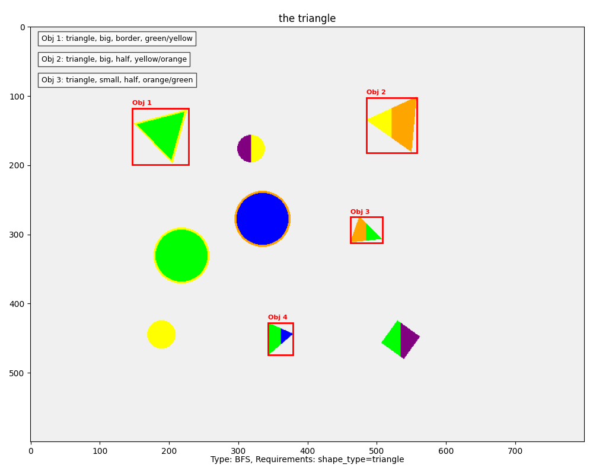
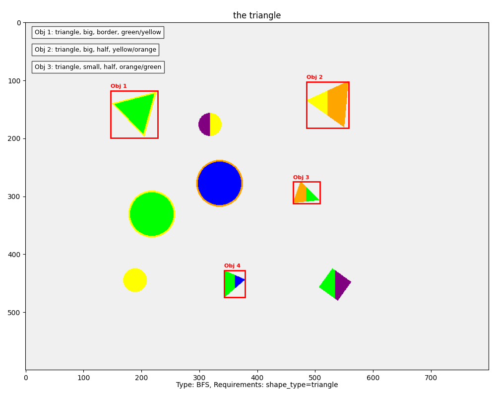
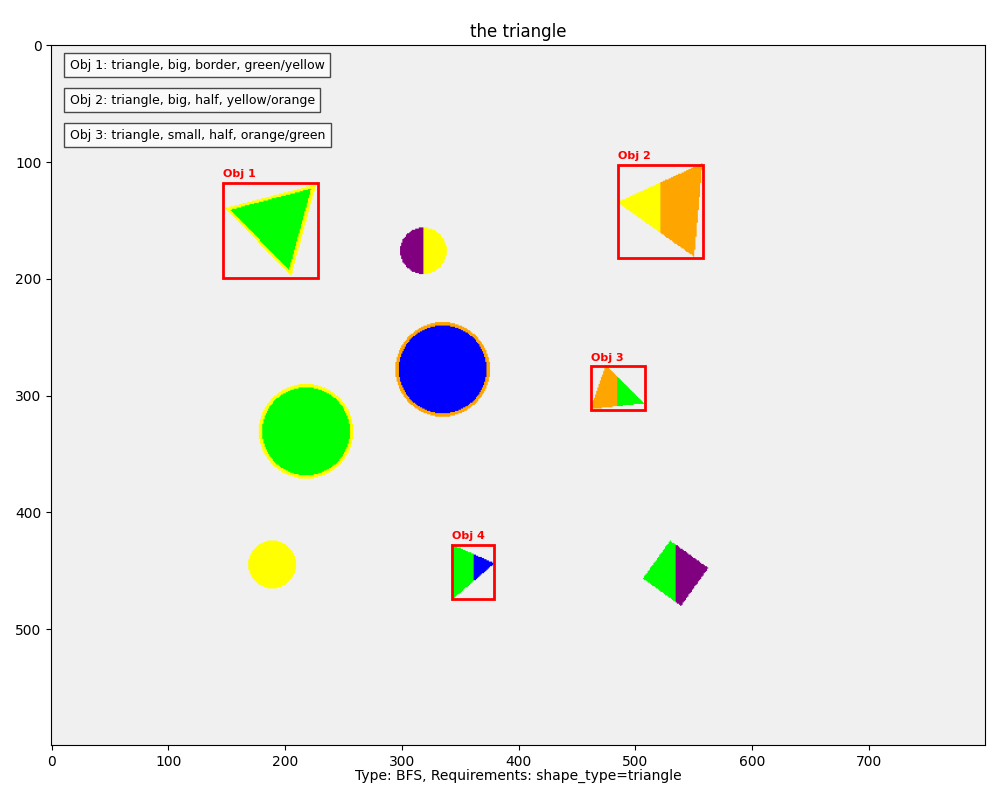
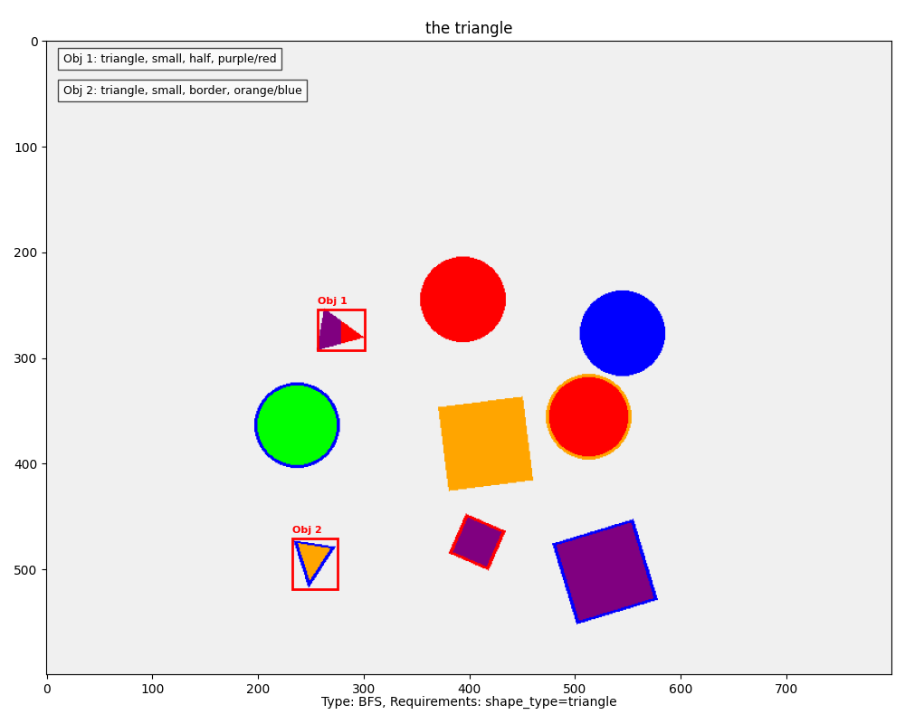
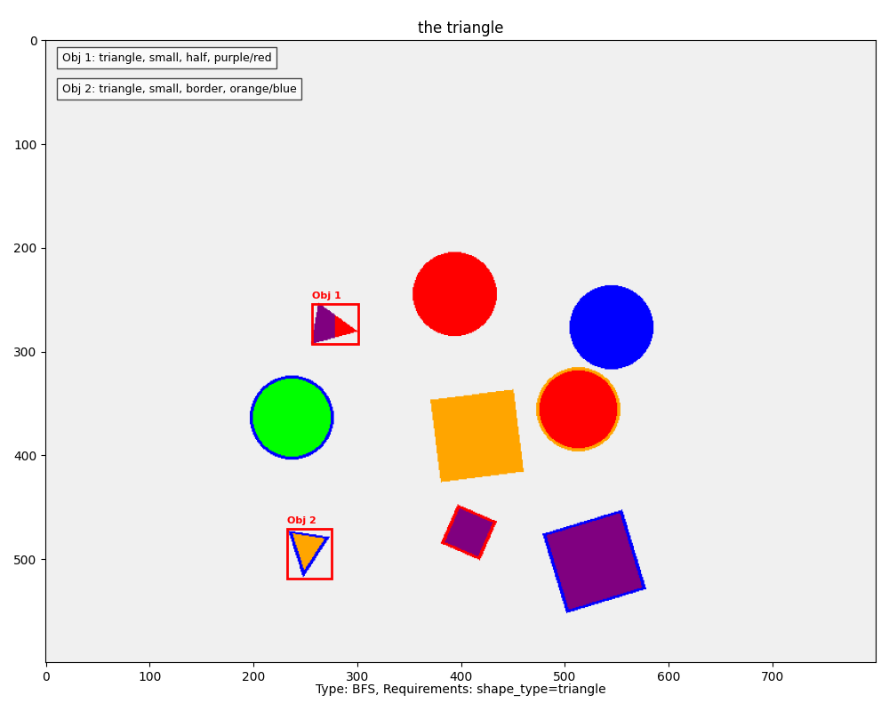
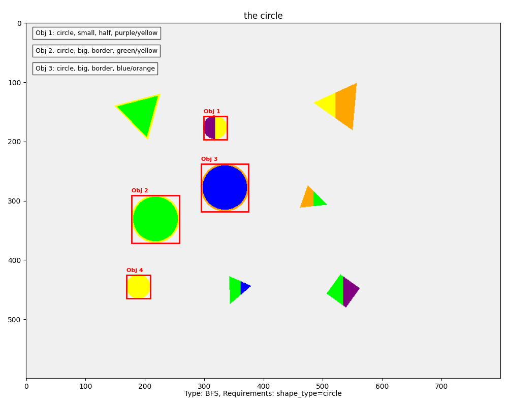
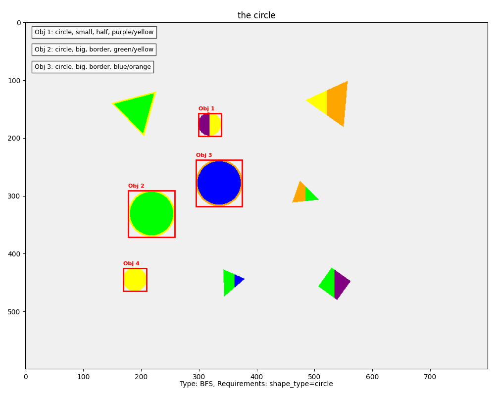

General BFS Examples
Various attribute-based referring expressions from the test dataset.
 


Generated on: 2025-04-04 03:38:37
This report shows visualizations of various BFS (attribute-based) referring expressions with different constraints.

 

 
